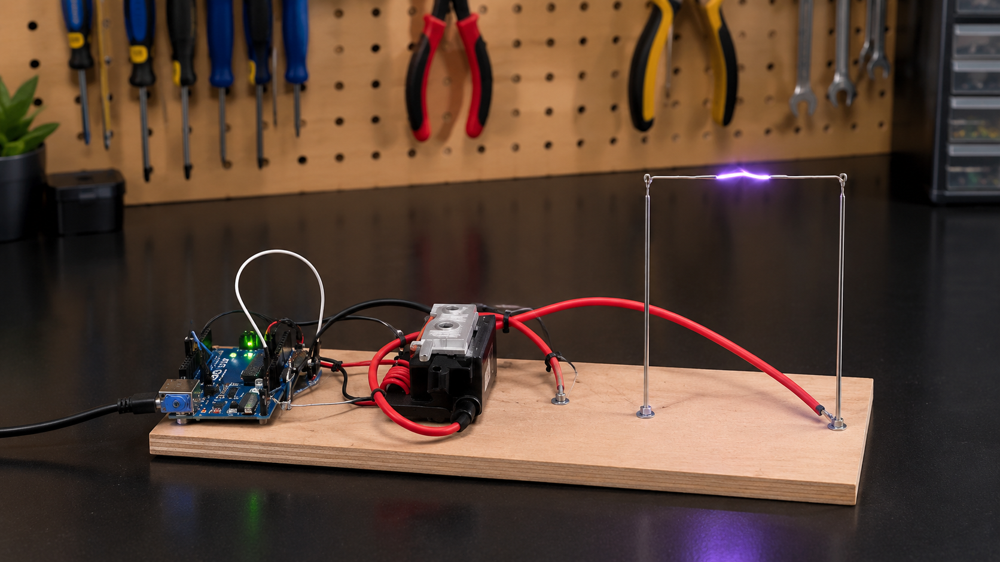

Bobina de Tesla Musical
Projeto experimental que combina eletrônica, programação e física para explorar a geração de descargas elétricas sincronizadas com sinais sonoros. A proposta é demonstrar como a tecnologia pode transformar sinais elétricos em efeitos visuais impressionantes, unindo aprendizado técnico e criatividade.
https://professormarlonnardi.blogspot.com
Aqui está um link que usamos de inspiração caso queira saber mais
Sistemas Embarcados e Internet das coisas